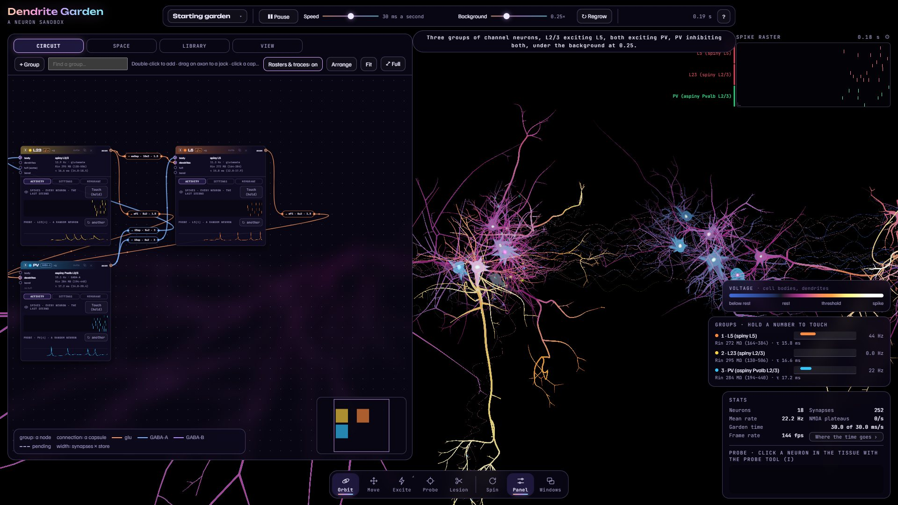
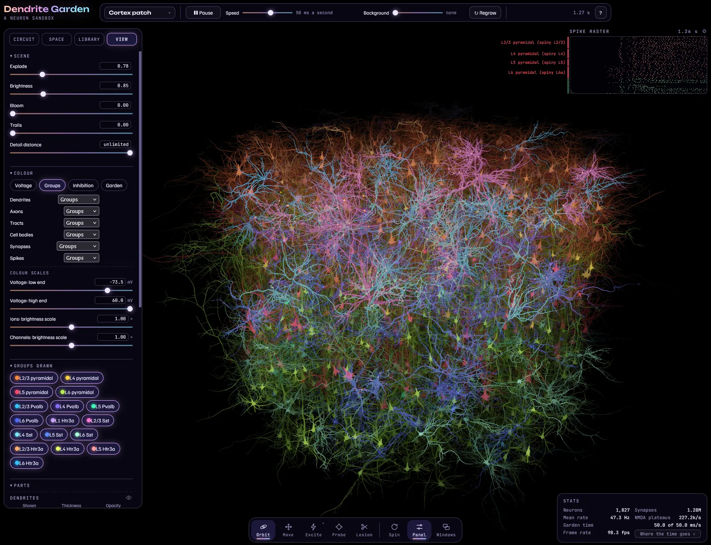

A garden of living neurons
Every neuron in the garden has a body, the start of an axon where its spikes begin, and its own tree of dendrites, grown from a group of mouse neuron reconstructions. Its membrane carries channel types described in published recordings, and its synapses have the short-term dynamics measured between real cells. Everything is drawn as it happens: voltage, the currents flowing, each spike travelling down its axon.
Grown trees
Twenty groups of mouse reconstructions, spiny and aspiny, from layer 1 to layer 6. Each neuron grows its own tree from its group; its size, thickness and branching are dials.
Ion channels
Sodium, potassium, the M-current, calcium and calcium-activated potassium, each from its paper, in a library you can edit, placed zone by zone.
Synapses
Conductance synapses with measured short-term dynamics, landing on the body, the dendrites, the tuft or a band of each receiving tree.
Groups and connections
A circuit graph of groups and the connections between them, each with its own settings, changed while the garden runs.
Tissue
Every group sits in a region of tissue with layers: a column, a slab, a ball, a band. A cortex patch of 1,827 neurons is one menu item away.
Your own hands
Touch a group, brush excitation or inhibition onto the tissue, probe a neuron's voltage, lesion it. Save a garden to a file and load it again.
As it runs


Ways in
The garden
Opens on a small garden of three groups, running. Drag to turn it, scroll to zoom, and press ? in its top bar for this site's manual.
OpenThe manual
How to use the page, step by step, with pictures, and the list of published sources the garden rests on.
ReadFor agents
The garden has an API in the page, window.garden. The guide for agents gives every call, for an AI agent or a script building gardens through it.
WebGPU
The garden runs its neurons on the graphics card, through WebGPU. As of November 2026 it has run in Microsoft Edge 157 and Firefox 148 on Windows 11 with an NVIDIA GeForce RTX 3060; other browsers and graphics cards have not been tried. Where a browser has no WebGPU, or a graphics card cannot give the page what it needs, the page says so.
The older gardens
This site as it stood in October 2026: Cortex Garden with simpler neurons, the Tadpole guide, Cochlea Garden, and the original Dendrite Garden, kept as they were.